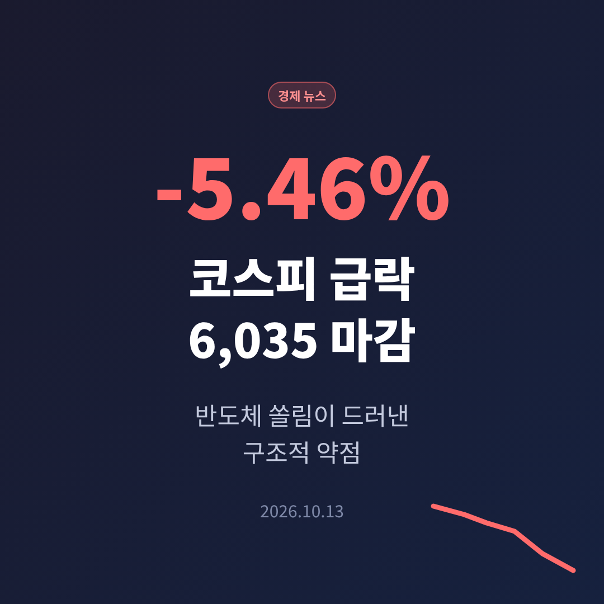
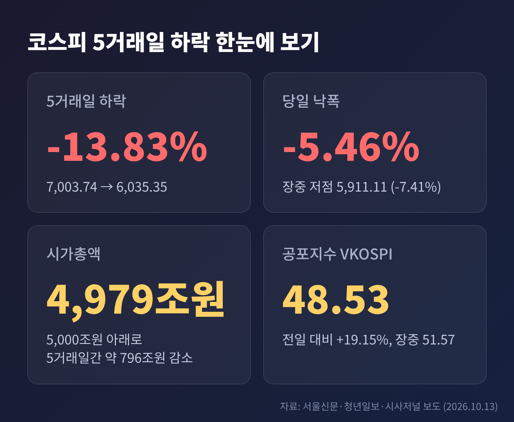
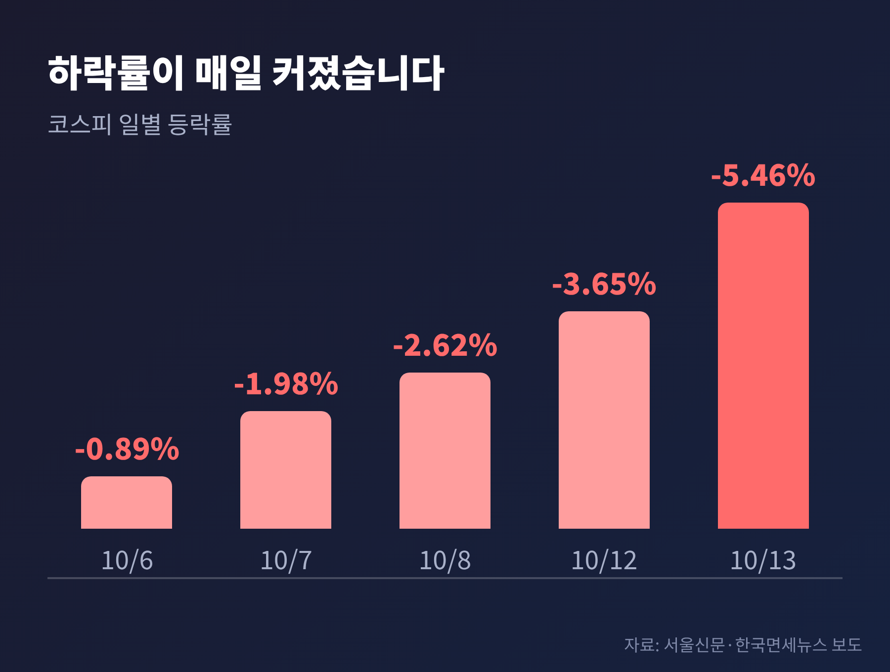
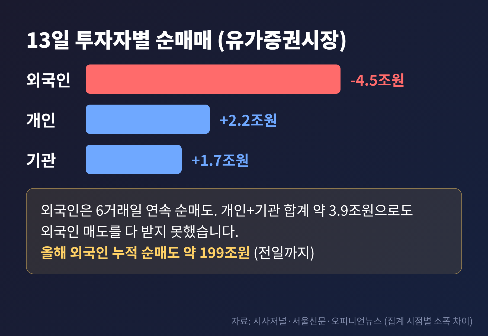
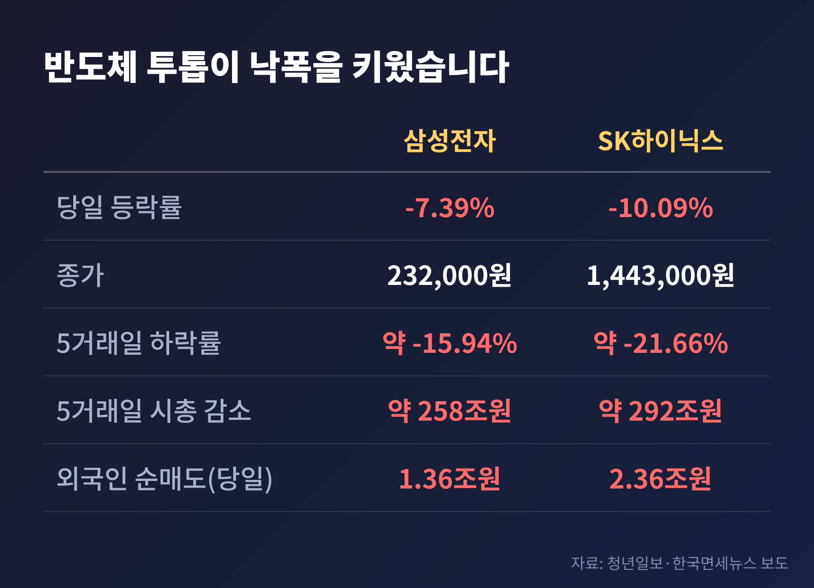
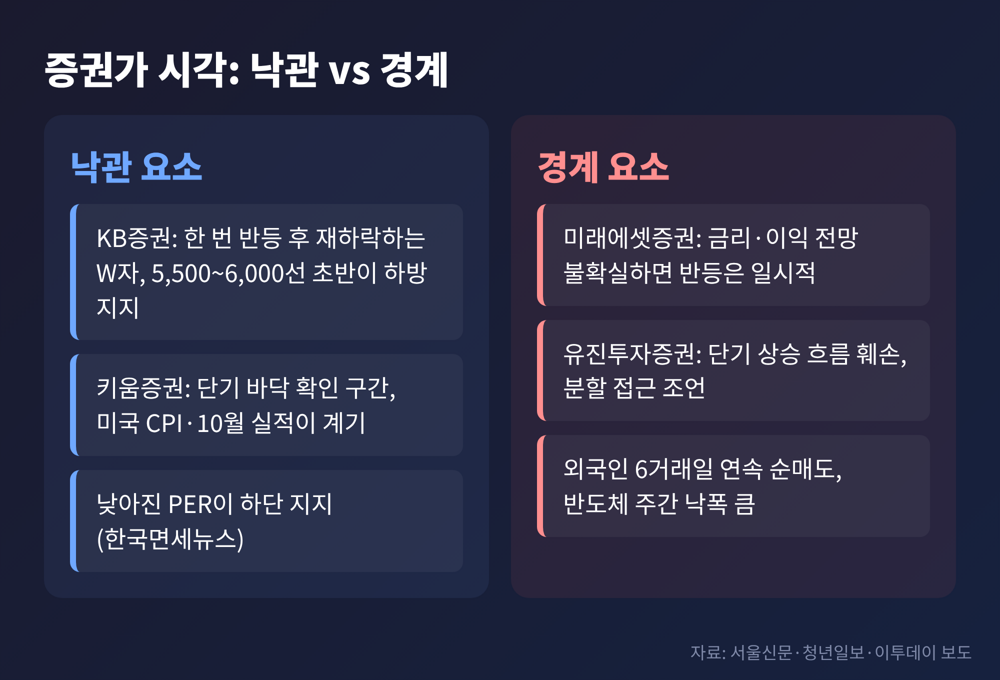

오늘은 2026년 10월 13일 코스피 급락이 무엇을 의미하는지 이야기해 보려 합니다. 하루 낙폭 자체보다, 왜 유독 한국 증시가 크게 흔들렸는지를 구조적으로 짚어 보겠습니다.
3줄 요약
13일 코스피는 6,186.08에 출발해 곧바로 힘을 잃었습니다. 오전 9시 47분에는 코스피200 선물이 급락하면서 매도 사이드카가 발동됐습니다. 프로그램 매도호가의 효력이 5분간 정지되는 조치로, 8월 19일 이후 55일 만입니다(이투데이).
지수는 장중 5,911.11까지 밀렸습니다. 전일 종가 대비 7.41% 낮은 수준입니다. 장 후반 저가 매수가 들어오며 6,000선은 회복했지만, 종가 기준 하락률 5.46%는 8월 19일(-5.80%) 이후 가장 큽니다.

더 눈여겨볼 대목은 속도입니다. 6일 -0.89%로 시작한 하락률은 -1.98%, -2.62%, -3.65%를 거쳐 13일 -5.46%로 매일 커졌습니다. 5거래일 연속 하락은 2024년 12월 말에서 2025년 1월 초 이후 처음이라고 이투데이는 전했습니다. 시가총액은 5거래일 사이 약 796조원이 줄어 4,979조원이 됐습니다(청년일보). 5,000조원 아래로 내려온 것은 약 두 달 반 만입니다.

변동성 지표도 비명을 질렀습니다. 공포지수로 불리는 VKOSPI는 19.15% 뛰어 48.53이 됐고, 장중에는 51.57까지 올랐습니다. 원/달러 환율은 10원 오른 1,345.1원에 마감했습니다.
이번 하락에서 가장 낯선 장면은 실적과 주가의 엇박자입니다. 삼성전자는 10월 8일 3분기 잠정 영업이익 107조 4천억원을 발표했습니다. 한국 기업으로는 분기 기준 처음 100조원을 넘은 기록이고, 전년 동기 12.2조원의 약 8.8배입니다(YTN).
예전에는 이런 숫자가 주가를 끌어올리는 재료였습니다. 그런데 닷새 뒤인 13일, 삼성전자는 7.39% 내린 23만 2,000원에 마감했습니다. SK하이닉스는 10.09% 하락한 144만 3,000원이었습니다.
한국면세뉴스는 실적 발표 이후의 차익실현과 함께 '메모리 업황이 정점을 지났는가'에 대한 경계감을 원인으로 들었습니다. 좋은 숫자가 이미 주가에 반영됐는지, 앞으로가 문제라는 시각이 힘을 얻은 셈입니다.
해외와 비교하면 격차가 더 선명합니다. 서울신문 집계에 따르면 6월 말 대비 코스피는 28.8% 내렸습니다. 같은 기간 대만 자취안지수는 4.8%, 나스닥은 3.9%(12일 기준) 올랐고, 닛케이225는 3.3% 내렸습니다. 다만 이 비교는 단일 매체의 집계라 기준일과 산정 방식을 감안해 보셔야 합니다.
가장 많이 거론된 원인은 중국 창신메모리(CXMT)입니다. 올해 안에 차세대 서버용 D램을 내놓겠다는 계획이 알려지며, 한국 메모리 업체의 기술 우위와 가격 결정력이 흔들릴 수 있다는 걱정이 번졌습니다. 이투데이는 7월 28일에도 CXMT 관련 우려로 코스피가 10.84% 급락했다고 전하며, 반도체 쏠림 장세의 취약성을 지적했습니다.
두 번째는 AI 투자 수익성입니다. 서울경제에 따르면 KB증권 임정은 연구원은 CXMT 보도에 더해 브로드컴 CEO의 AI 확대 제약 요인 발언이 겹치며 투자심리가 위축됐다고 진단했습니다. 청년일보는 인텔 CEO도 자본과 투자 비용 부담을 언급했다고 정리했습니다. 전날 미국에서는 필라델피아 반도체지수가 2.67% 내렸고, 마이크론은 3.88% 하락했습니다.
한국 시장이 특히 민감했던 이유는 업종 구성에 있습니다. 서울신문은 한국은 삼성전자와 SK하이닉스 같은 메모리 비중이 커서, 위탁생산 중심인 대만보다 CXMT의 추격과 AI 투자 수익성 우려에 더 취약하다고 설명했습니다.
수급을 보면 하락의 모양이 드러납니다. 외국인은 유가증권시장에서 약 4조 5천억원을 순매도했습니다. 6거래일 연속 순매도이며, 하루 규모로는 7월 28일 이후 가장 큽니다(시사저널). 매체별로 4조 4,926억원에서 4조 5,259억원까지 집계가 조금씩 다른데, 집계 시점 차이로 보입니다.
개인은 약 2조 2천억원, 기관은 약 1조 7천억원을 순매수했습니다. 합치면 3조 9천억원 안팎이지만 외국인 물량을 다 받아내지는 못했습니다.

올해 외국인 누적 순매도는 약 199조 1천억원에 이릅니다(오피니언뉴스). 그동안 이 물량을 받쳐 준 것이 자사주 매입이었습니다. 서울신문은 삼성전자가 약 15조원 규모 자사주 매입을 마쳤고, SK하이닉스도 이번 주 안에 끝낼 것으로 보인다고 전했습니다. 기타법인이 지난달 초부터 하루 1조 5천억원 넘게 사들였지만, 추가 여력은 많지 않다는 설명입니다.
달리 말하면 사 주던 손이 빠지는 시점에 외국인 매도가 겹친 것입니다. 장 초반 사이드카 이후에도 프로그램 비차익 매도와 레버리지 ETF 재조정 물량이 이어졌다는 분석도 있습니다(한국면세뉴스).
13일 하락은 시장 전체가 아니라 반도체에 집중됐습니다. 코스닥은 1.43% 내리는 데 그쳤고, 전기·전자 업종이 7.61% 빠졌습니다.

반대편에는 버틴 종목들이 있습니다. LG에너지솔루션이 3.02% 올랐고, 한화시스템은 3.86% 상승했습니다. KB금융(-0.25%), 신한지주(-0.8%) 같은 금융주도 낙폭이 작았습니다. 시장이 약해졌다기보다, 한 업종에 쏠려 있던 자금이 한꺼번에 빠져나갔다는 뜻입니다.
해석은 갈립니다. 이승우 유진투자증권 리서치센터장은 "단순한 차익실현이나 일시적 조정으로 보기에는 하락의 폭과 속도가 상당하다"고 진단했습니다. 한편 반도체 수요와 실적이 무너진 것은 아니며 AI·반도체 주문은 여전히 강하다고 덧붙였습니다.
CXMT를 둘러싼 평가도 엇갈립니다. 유진투자증권은 7월 보고서에서 CXMT의 상장과 증설을 공급과잉 신호로 보는 것은 이르다고 했습니다. 명목 생산능력과 실제 출하량은 다르고, 영향력은 2029~2030년 이후에야 의미가 커질 것이라는 논리입니다. 가격 상승률이 둔화되는 것과 가격이 떨어지는 것은 다르다는 지적도 있었습니다(이데일리 영문판).
환율도 한 방향으로 읽히지 않습니다. 원화 강세가 외국인의 환차익 실현을 부추겼다는 분석(서울신문)이 있는 반면, 원/달러 환율 상승이 위험자산 선호를 낮췄다는 설명(한국면세뉴스)도 있습니다. 전일 환율은 1,335.1원으로 2024년 10월 이후 최저였고, 이날은 1,345.1원이었습니다. 환율이 원인인지 결과인지는 아직 단정하기 어렵습니다.
증권가의 전망은 비슷한 듯 다릅니다. 아래 표는 이번 기사들에 나온 시각을 정리한 것입니다.

KB증권 김민규 연구원은 한 차례 반등 뒤 다시 내려가 저점을 찾는 'W자 반등'을 예상했습니다. 하방 지지 구간은 5,500선 안팎에서 6,000선 초반으로 봤습니다. 한지영 키움증권 연구원은 악재가 이미 알려진 범위인 만큼 단기 바닥을 확인하는 구간일 수 있다고 했고, 미국 9월 소비자물가지수와 10월 실적 시즌이 반전의 계기가 될 수 있다고 짚었습니다.
반대편의 목소리도 분명합니다. 김석환 미래에셋증권 연구원은 외국인 매도가 잦아들더라도 금리 부담과 반도체 이익 전망의 불확실성이 풀리지 않으면 반등이 일시적일 수 있다고 봤습니다. 그가 꼽은 확인 요건은 외국인 수급 변화, 미국 장기금리와 국내 할인율의 흐름, 내년 반도체 이익 추정치의 유지 또는 상향입니다.
유진투자증권은 공격적인 일괄 매수보다 위험 관리 중심의 분할 접근이 필요하다고 조언했습니다. 이 글은 어느 쪽이 맞는지 가리지 않습니다. 다만 앞으로 확인할 지점은 분명합니다.
정리하면 이렇습니다. 이번 급락은 악재 하나로 설명되지 않습니다. 반도체에 쏠린 시장 구조 위에 외국인 매도와 자사주 소진, AI 투자 수익성 의문이 겹친 결과로 보는 분석이 많습니다.
결국 남는 것은 하나입니다. "실적이 좋아도 쏠림은 빠르게 풀릴 수 있다." 반등이 오더라도 그 폭보다 왜 받쳐 줄 수급이 얇았는지를 먼저 살펴보시길 권합니다.
※ 이 글은 언론 보도를 바탕으로 한 정보 정리이며 투자 권유가 아닙니다. 투자 판단과 그 결과의 책임은 투자자 본인에게 있습니다. 수치는 2026년 10월 13일 기준 언론 보도를 따랐고, 매체별 집계 시점에 따라 일부 차이가 있을 수 있습니다.